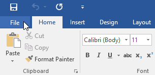
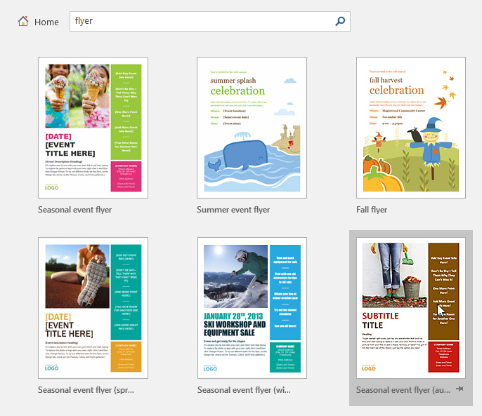
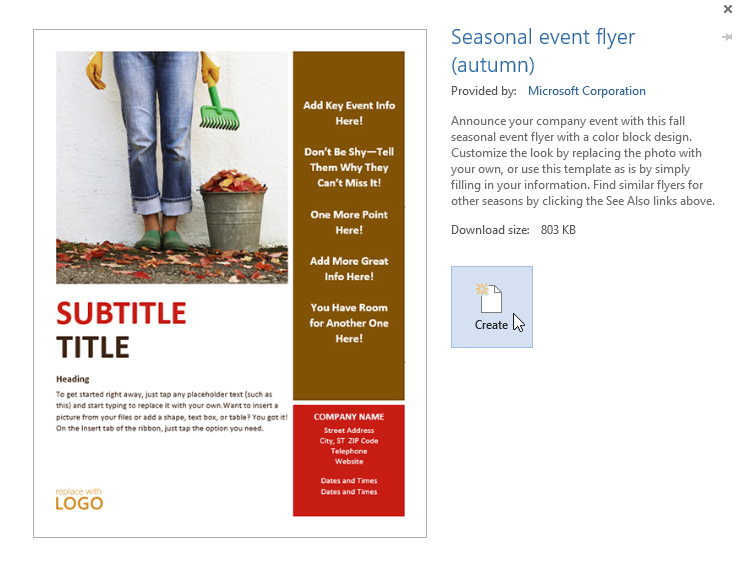
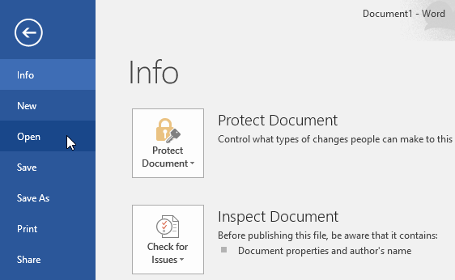
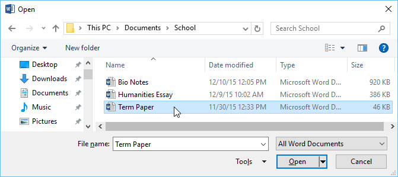
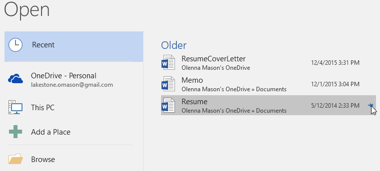
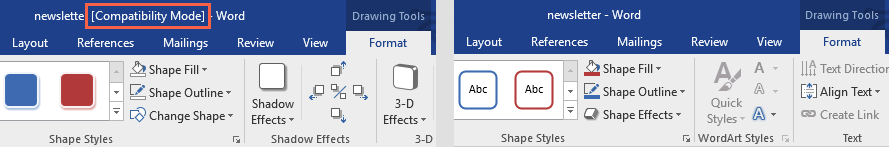
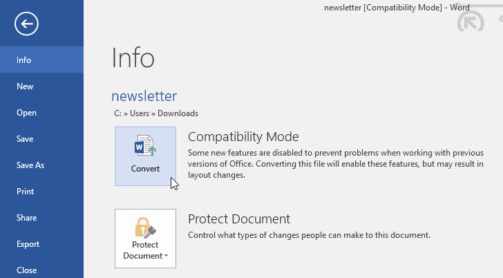
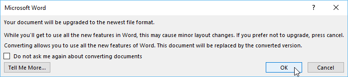

Lesson 3: creating-and-opening-documents
Lesson 3: Creating and Opening Documents
/en/word/understanding-onedrive/content/
Introduction
Word files are called documents. Whenever you start a new project in Word, you'll need to create a new document, which can either be blank or from a template. You'll also need to know how to open an existing document.
Watch the video below to learn more about creating and opening documents in Word.
[](../../../../../www.youtube.com/embed/PafCMUVH_OA.webm)
To create a new blank document:
When beginning a new project in Word, you'll often want to start with a new blank document.
- Select the File tab to access Backstage view.

2. Select New, then click Blank document. 3. A new blank document will appear.
3. A new blank document will appear.
To create a new document from a template:
A template is a predesigned document you can use to create a new document quickly. Templates often include custom formatting and designs, so they can save you a lot of time and effort when starting a new project.
- Click the File tab to access Backstage view, then select New.
- Several templates will appear below the Blank document option. You can also use the search bar to find something more specific. In our example, we'll search for a flyer template.
 3. When you find something you like, select a template to preview it.
3. When you find something you like, select a template to preview it.

4. A preview of the template will appear. Click Create to use the selected template.
5. A new document will appear with the selected template.
To open an existing document:
In addition to creating new documents, you'll often need to open a document that was previously saved. To learn more about saving documents, visit our lesson on Saving and Sharing Documents.
- Navigate to Backstage view, then click Open.

2. Select This PC, then click Browse. You can also choose OneDrive to open files stored on your OneDrive. 3. The Open dialog box will appear. Locate and select your document, then click Open.
3. The Open dialog box will appear. Locate and select your document, then click Open.

4. The selected document will appear.Most features in Microsoft Office, including Word, are geared toward saving and sharing documents online. This is done with OneDrive, which is an online storage space for your documents and files. If you want to use OneDrive, make sure you’re signed in to Word with your Microsoft account. Review our lesson on Understanding OneDrive to learn more.
To pin a document:
If you frequently work with the same document, you can pin it to Backstage view for quick access.
- Navigate to Backstage view, click Open, then select Recent.
- A list of recently edited documents will appear. Hover the mouse over the document you want to pin, then click the **pushpin icon.

3. The document will stay in the Recent documents list until it is unpinned. To unpin** a document, click the pushpin icon again.
Compatibility Mode
Sometimes you may need to work with documents that were created in earlier versions of Microsoft Word, like Word 2010 or Word 2007. When you open these types of documents, they will appear in Compatibility Mode.
Compatibility Mode disables certain features, so you'll only be able to access commands found in the program that was used to create the document. For example, if you open a document created in Word 2007 you can only use tabs and commands found in Word 2007.
In the image below, you can see how Compatibility Mode can affect which commands are available. Because the document on the left is in Compatibility Mode, it only shows commands that were available in Word 2007.

Word 2007 Commands
To exit Compatibility Mode, you'll need to convert the document to the current version type. However, if you're collaborating with others who only have access to an earlier version of Word, it's best to leave the document in Compatibility Mode so the format will not change.
You can review this support page from Microsoft to learn more about which features are disabled in Compatibility Mode.
To convert a document:
If you want access to the newer features, you can convert the document to the current file format.
- Click the File tab to access Backstage view, then locate and select the Convert command.

2. A dialog box will appear. Click OK to confirm the file upgrade.
3. The document will be converted to the newest file type.Converting a file may cause some changes to the original layout of the document.
Challenge!
- Open our practice document.
- Notice that the document opens in Compatibility Mode. Convert it to the current file format. If a dialog box appears asking if you would like to close and reopen the file in order to see the new features, choose Yes.
- In Backstage view, pin a file or folder.
/en/word/saving-and-sharing-documents/content/